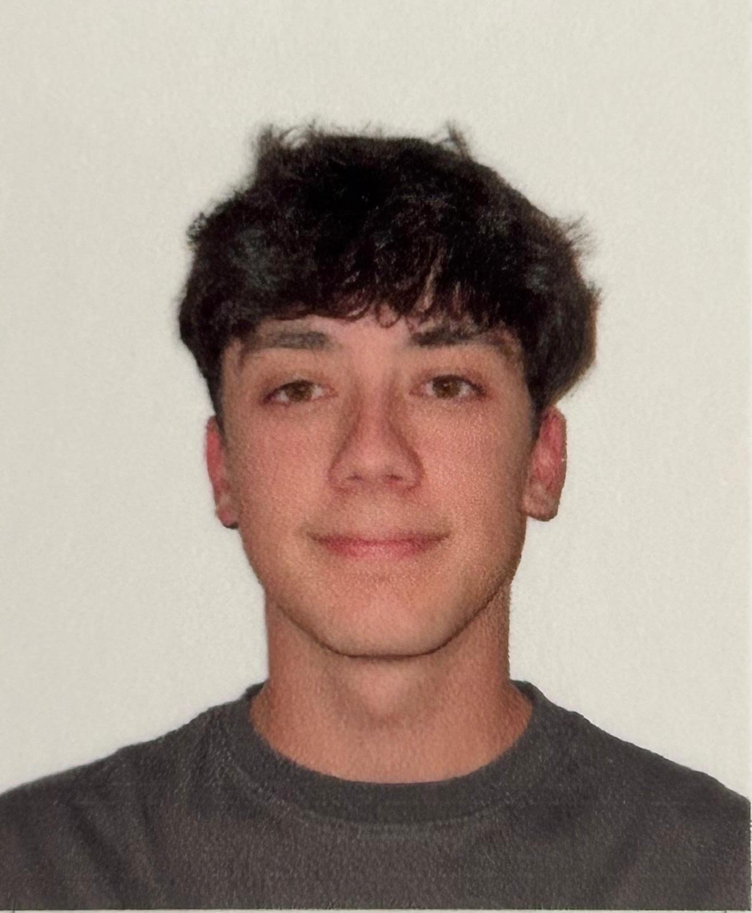
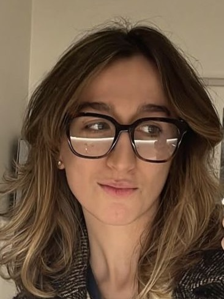
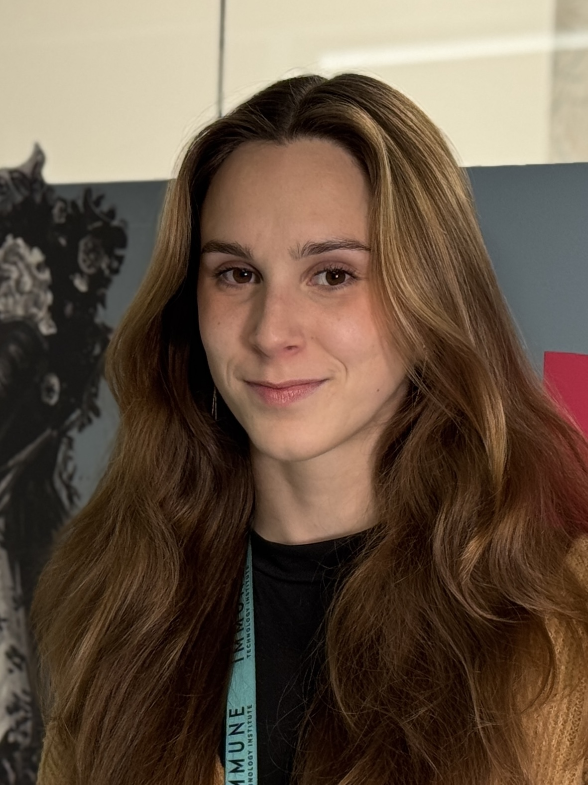
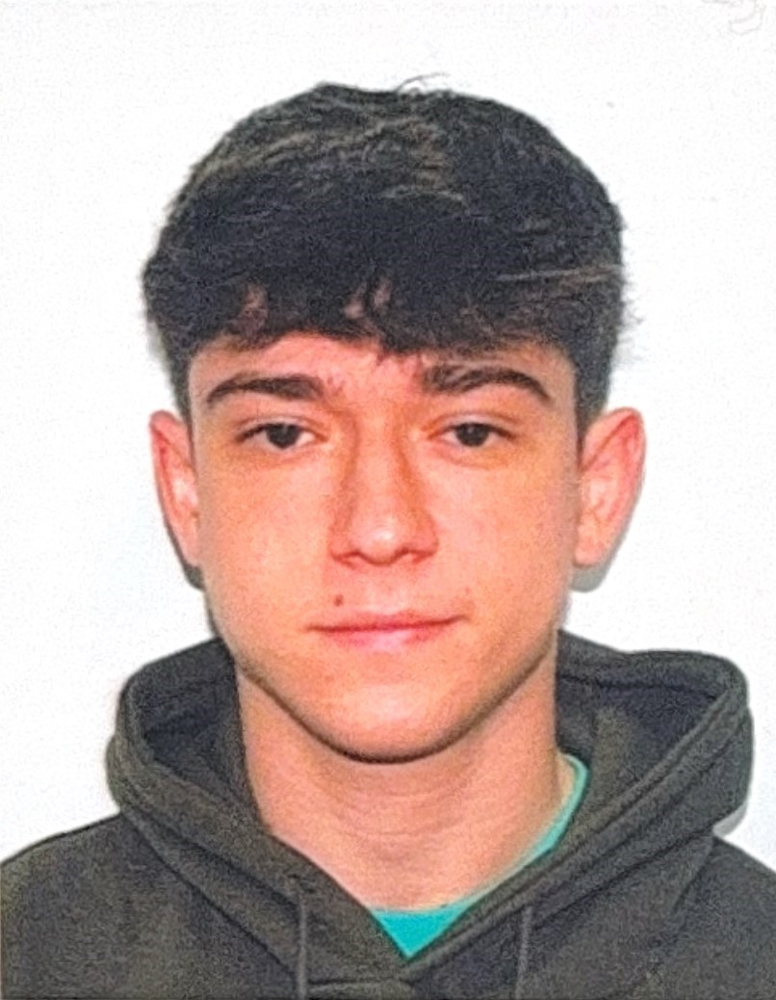

Apasionado por la ciberseguridad y los retos de programación, Iago siempre busca vulnerabilidades… para luego arreglarlas. Cuando no está escribiendo código, probablemente esté inmerso en un videojuego indie o explorando nuevas tecnologías. En el equipo, se encarga del backend y la infraestructura.
Catalina es la mente analítica del equipo, siempre con ganas de aprender y aplicar nuevas metodologías. Le fascina la robótica y el machine learning. Cuando no está programando, seguramente esté leyendo sobre neurociencia o tocando la guitarra. En el proyecto, trabaja en la integración de datos y optimización de algoritmos.
Creativa y resolutiva, Alai tiene una gran pasión por la experiencia de usuario y el diseño frontend. Su meta es hacer que la tecnología sea intuitiva y atractiva. En su tiempo libre, disfruta del cine de ciencia ficción y del senderismo. En el equipo, lidera el diseño y la interfaz de la app.
Rubén es el optimizador del grupo: si algo puede ir más rápido o ser más eficiente, él lo consigue. Le encanta el desarrollo web y la inteligencia artificial, y cuando no está programando, suele estar en el gimnasio o cocinando recetas saludables. Se encarga del rendimiento y la arquitectura del proyecto.
